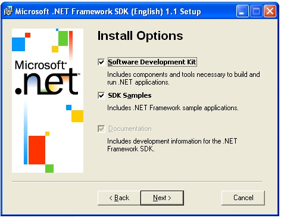

Jumli und C# |
|
Das A und O ist das .Net Framework SDK von Microsoft, ohne das geht gar nix. Also erst mal runterladen oder vom Kolegen besorgen. Hier
gibt´s das ganze |
|
|
" |
So jetzt installiern, natürlich auf der lokalen Festplatte, das dauert wieder etwas. |
|
So wenn Ihr diese Hürde gemeistert habt, steht dem
Programmiern |
|